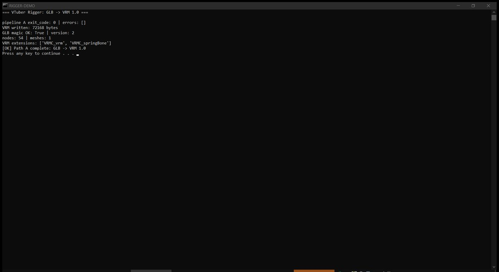

CASE 14 / classic
VTuber Rigger
Two paths, fully local (no paid APIs): Path A — a 3D model (GLB/GLTF/VRM/OBJ) → VRM 1.0; Path B — front/side/back screenshots → VRM 1.0. K-Means + curvature body segmentation, a 53-bone VRM skeleton predictor, RBF + Lapl
54nodes in the VRM skeleton
2paths: model / screenshots
1mesh
Problem
Rigging a VTuber avatar — skeleton, skin weights, expressions, spring bones — takes hours of manual work in Blender, and screenshot-based reconstruction from a flat image is harder still.
Approach
Two paths, fully local (no paid APIs): Path A — a 3D model (GLB/GLTF/VRM/OBJ) → VRM 1.0; Path B — front/side/back screenshots → VRM 1.0. K-Means + curvature body segmentation, a 53-bone VRM skeleton predictor, RBF + Laplacian skin weights, 17 expressions, springs for hair/clothing, plus headless-VRM and LPIPS/CLIP perceptual QA gates.
Evidence

Stack
Pythontrimeshpygltflibnumpy / scipy / scikit-learnOpenCVpytest (unit + integration + property + perceptual). Публичный: github.com/kukhtik/RIGGER
Links
Source: README.ru.md § VTuber Rigger